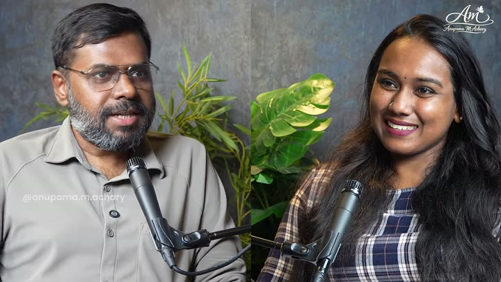
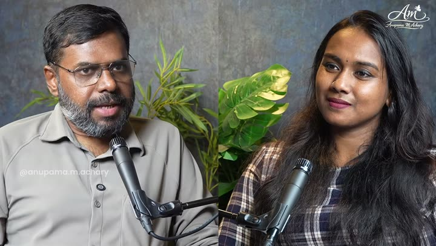
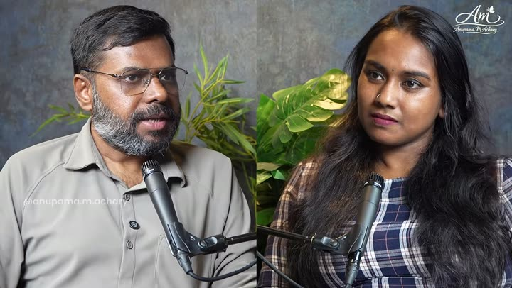
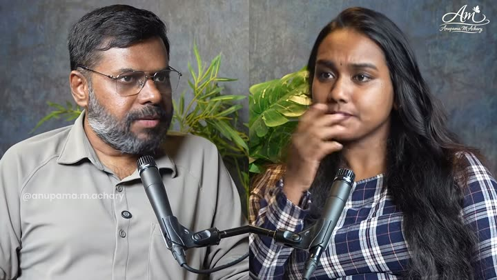
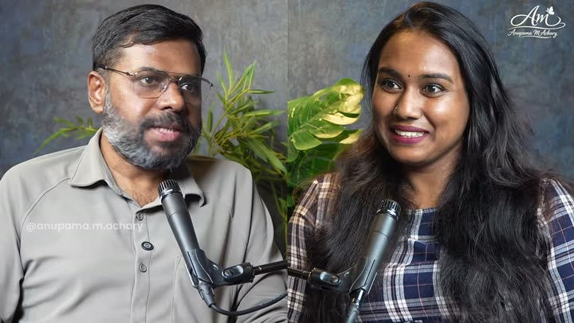
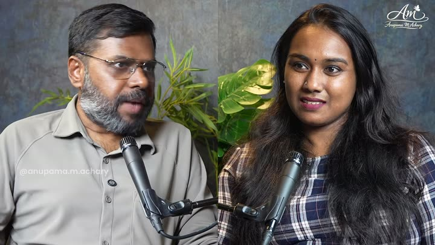
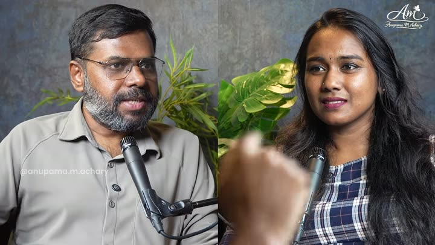

![Kaipps Cafe]()
Authored by Kaipp's AI Repo© 2026 Nishad Kaippally (Kaipps Cafe). All rights reserved.
This report was built with several private and public AI models. It is educational material: not for sale, and not to be reused or republished, including on any YouTube channel, without explicit permission.
ISRO ലേബൽ, ഋഗ്വേദ "evidence (തെളിവ്)": ശാസ്ത്രവും ഗ്രന്ഥ-ചരിത്രവും ഒരേ podcast-ൽ
Jijith Nadumuri Ravi × Anupama M A — പരിണാമം, ജനിതകം, ബഹിരാകാശം, സരസ്വതി, രാമായണം (സംവാദമല്ല, interview ആണ്)

ഇത് debate (സംവാദം) അല്ല, ഒരു interview ആണ്. ഒരേ ആൾ, Jijith Nadumuri Ravi, ചിലയിടത്ത് rationalist ആയും ചിലയിടത്ത് ഗ്രന്ഥം ചരിത്രമാക്കുന്ന ആളായും സംസാരിക്കുന്നു. Anupama M A ചോദ്യങ്ങൾ ചോദിക്കുന്നു; ചിലപ്പോൾ മിത്തിനെ അക്ഷരാർത്ഥത്തിൽ എടുക്കുന്ന ദിശയിലേക്ക് തള്ളുന്നുമുണ്ട്.
അദ്ദേഹം ഏറ്റവും ശക്തനായത് മിഥ്യകൾ പൊളിക്കുമ്പോഴാണ്: ചന്ദ്രയാത്ര നിഷേധം (01:09:01), flat earth (01:04:05), രാമസേതു ആരോ പണിത പാലമാണെന്ന വാദം (01:52:43).
ഏറ്റവും ദുർബലനായത് ഋഗ്വേദത്തെ തന്നെ 'evidence (തെളിവ്)' ആക്കിയപ്പോഴാണ് (00:25:34). 3300 BC കാലഗണനയും Out of India വാദവും അങ്ങനെയാണ് വന്നത്, ഒപ്പം ജാതിയെ ന്യായീകരിക്കുന്ന apologetics-ഉം.
ശാസ്ത്രഭാഗത്തും പിഴവുകൾ ഏറെയുണ്ട്: Apollo ദൗത്യങ്ങളുടെ എണ്ണം, Lamarckism, 'ഭാഷയ്ക്ക് 10,000 വർഷം'. ഇവ നിഷേധികൾക്ക് നേരിട്ട് ആയുധമാകും.
Top 5 പിഴവുകൾ: ഗ്രന്ഥം ചരിത്രമാക്കുന്ന വാദം (ഗുരുതരമായത് ആദ്യം)
എല്ലാ പിഴവുകളുടെയും വേര് ഒന്നാണ്: ഒരു മതഗ്രന്ഥത്തെ അതിന്റെ തന്നെ ചരിത്രസത്യത്തിനുള്ള തെളിവാക്കുന്നു.
'നദികളുടെ ക്രമം = കുടിയേറ്റം', അതുകൊണ്ട് Out of India

ഏറ്റവും നല്ല രൂപത്തിൽ വാദം ഇതാണ്: പഴയ മണ്ഡലങ്ങളിൽ കിഴക്കൻ നദികളും പുതിയവയിൽ പടിഞ്ഞാറൻ നദികളും വരുന്നു, അപ്പോൾ ജനം പടിഞ്ഞാറോട്ട് നീങ്ങി. പക്ഷേ മണ്ഡലങ്ങളുടെ ആ 'chronology (കാലക്രമം)' തലഗിരി ഉണ്ടാക്കിയതാണ് (
00:25:04). അത് peer-reviewed അല്ല; argument from authority ആണ്. പരിശോധിക്കാവുന്ന തെളിവ് നേരെ മറിച്ചാണ്: റാഖിഗഢിയിലെ ഹാരപ്പൻ ജീനോമിൽ steppe ancestry (സ്റ്റെപ്പി വംശപരമ്പര) ഇല്ല (Shinde et al. 2019, Cell). Steppe ancestry ദക്ഷിണേഷ്യയിൽ എത്തുന്നത് ~2000–1500 BCE-ലാണ് (Narasimhan et al. 2019, Science). 'ഇതിൽ നാഷണലിസം ഇല്ല' (
00:31:15) എന്ന് പറഞ്ഞതുകൊണ്ട് അത് തെളിവാകില്ല. അദ്ദേഹം ഉദ്ധരിക്കുന്ന Heggarty (
00:31:28) പോലും ഇൻഡോ-യൂറോപ്യന്റെ ജന്മദേശം ഇന്ത്യക്ക് പുറത്താണ് കാണുന്നത്.
'സരസ്വതി കൊണ്ട് മാത്രം ഋഗ്വേദം 3300–1900 BC എന്ന് ഉറപ്പിക്കാം'

ഋഗ്വേദത്തിലെ സരസ്വതി ഘഗ്ഗർ ആണെന്ന് ആദ്യം അനുമാനിക്കുന്നു (ഹെൽമണ്ട് സാധ്യത
01:32:12-ൽ തള്ളിക്കളയുന്നു). എന്നിട്ട് ആ അനുമാനം വെച്ച് ഋഗ്വേദത്തിന് കാലം നിശ്ചയിക്കുന്നു. ഇത് circular reasoning ആണ്. ഭൂഗർഭ പഠനങ്ങളിൽ ഭൂരിഭാഗവും പറയുന്നത്, സത്ലജ് ഘഗ്ഗർ ചാനൽ വിട്ടത് ~8000 വർഷം മുമ്പാണെന്നാണ് (Singh 2017, Nature Comms). ഹാരപ്പൻ കാലത്ത് ഘഗ്ഗർ മഴയെ ആശ്രയിച്ചുള്ള നദിയായിരുന്നു (Giosan 2012, PNAS). 4.2k സംഭവം മൺസൂൺ ദുർബലമായതാണ്;
01:37:47-ൽ പറയുന്നതുപോലെ മഴ 'സീറോ' ആയിരുന്നില്ല. '65% settlements (വാസകേന്ദ്രങ്ങൾ)' (
01:30:49) എന്ന കണക്കിന് പിന്നിൽ survey bias (സർവേ പക്ഷപാതം) ഉണ്ട്: മരുഭൂമിയിൽ സൈറ്റുകൾ പുറത്ത് കാണാം, സിന്ധു സമതലത്തിൽ അവ എക്കൽ മണ്ണിനടിയിലാണ്.
സ്വന്തം അളവുകോൽ തന്നെ 3300 BC-യെ തകർക്കുന്നു
അദ്ദേഹം പറയുന്നു: 'രാമൻ എന്ന് പറഞ്ഞാൽ തേരക്കൊടിച്ച് രാമനാണ്… 2000 BC അതിനപ്പുറം പോകാൻ പറ്റില്ല.' വളരെ ശരി. പക്ഷേ ഋഗ്വേദത്തിലും, പഴയ മണ്ഡലങ്ങളിൽ പോലും, കുതിരയും രഥവും നിറഞ്ഞിരിക്കുന്നു. Spoked-wheel chariot (ആരക്കാലുള്ള ചക്രമുള്ള രഥം) ആദ്യം കാണുന്നത് ~2000 BCE-ൽ സിന്താഷ്ടയിലാണ്. വളർത്തുകുതിര പടർന്നത് ~2200–2000 BCE-ലാണ് (Librado et al. 2021, Nature). രാമന് ബാധകമാക്കിയ അളവുകോൽ ഋഗ്വേദത്തിന് ബാധകമാക്കുന്നില്ല. ഇത് special pleading ആണ്.
'വർണ്ണസങ്കരം ഇല്ല, അതുകൊണ്ട് ഗുണകർമ്മ വർണ്ണം', പിന്നെ 'എല്ലാവരും equal'

ഋഗ്വേദം 'ജാതിയാണോ ഗുണകർമ്മമാണോ എന്ന് പറയുന്നില്ല' എന്ന് അദ്ദേഹം തന്നെ സമ്മതിക്കുന്നു (
00:37:30). എന്നിട്ടും 'ഇതൊന്നും ഇല്ലാത്തതുകൊണ്ട്' അത് merit-based (കഴിവ് അടിസ്ഥാനമാക്കിയ) വർണ്ണമാണെന്ന് നിഗമനം ചെയ്യുന്നു. ഇത് argument from silence ആണ്: 'അറിയില്ല' എന്നതിനെ 'ഗുണകർമ്മം' ആക്കി മാറ്റി. പുരുഷസൂക്തം (
00:37:17) ശരീരഭാഗങ്ങളിൽ നിന്നുള്ള ഉത്ഭവമാണ് വിവരിക്കുന്നത്, അത് ശ്രേണിയുടെ ചിത്രമാണ്. 'എല്ലാവരും ഈക്വൽ ആയിട്ട് തന്നെ ജീവിച്ചിരുന്നു' (
00:42:08) എന്നതിന് തെളിവായി നൽകുന്നത് സുമന്ത്രനും രാമനും തമ്മിലുള്ള ഒരു കഥ മാത്രം. തൊട്ടുപിന്നാലെ, കർണനെ സൂതൻ എന്ന് പറഞ്ഞ് ഭീമൻ അപമാനിക്കുന്ന കഥ അദ്ദേഹം തന്നെ പറയുന്നു (
00:43:06).
'രാമന്റെ കാലത്തെ ഒറിജിനൽ രാമായണം വേർതിരിച്ചെടുക്കാം'
ഏത് ശ്ലോകം 'സമകാലീനം', ഏത് 'പിൽക്കാലം' എന്ന് തീരുമാനിക്കുന്നത് അദ്ദേഹം തന്നെയാണ്. അതിന് പരിശോധിക്കാവുന്ന ഒരു criterion (മാനദണ്ഡം) ഇല്ല. അങ്ങനെ എടുത്ത ശ്ലോകങ്ങൾ വെച്ചാണ് അയോധ്യയ്ക്ക് 'നല്ല തെളിവ്' (
01:43:24), സഗരൻ മുതൽ രാമൻ വരെയുള്ള വംശാവലിയിലൂടെ 'കൃത്യമായ' കുടിയേറ്റം (
01:44:39), ലങ്ക ഭഗത്രാവ് ആണെന്നതിന് '80% confidence (ഉറപ്പ്)' (
01:53:21) എന്നിവയെല്ലാം. ആത്മവിശ്വാസം തെളിവല്ല. അയോധ്യയിലെ ഖനനങ്ങളിൽ നഗരപാളികൾ ബി.സി. ഒന്നാം സഹസ്രാബ്ദത്തിലേതാണ് (NBPW). 1950–1850 BC-ലെ രാമരാജ്യത്തിന് ഒരു പുരാവസ്തു തെളിവുമില്ല.
Top 5 പിഴവുകൾ: rationalist ഭാഗം, അത് എങ്ങനെ പറയണമായിരുന്നു
ഒരു ISRO ശാസ്ത്രജ്ഞൻ തെറ്റായ കണക്ക് പറഞ്ഞാൽ നിഷേധികൾ അത് ആയുധമാക്കും. ഇതിനു പുറമെ ചെറിയ പിഴവുകളും ഉണ്ട്. Kasparov-ന് ശേഷം മനുഷ്യൻ-കമ്പ്യൂട്ടർ മത്സരങ്ങൾ പിന്നെയും നടന്നു (00:05:49). സുനിത വില്യംസിന്റെ ദൗത്യം പ്ലാൻ ചെയ്തത് ~8 ദിവസമായിരുന്നു; ISS-ൽ രണ്ടുപേർ മാത്രമല്ല ഉണ്ടായിരുന്നത് (01:01:18). Spirit/Opportunity റോവറുകൾ 90 sol-ന് വേണ്ടി പ്ലാൻ ചെയ്തവയാണ്, ഇപ്പോൾ പ്രവർത്തിക്കുന്നില്ല (01:08:21). ചന്ദ്രയാൻ-1 നേടിയത് ~95% ലക്ഷ്യങ്ങളാണ്, '100%' അല്ല (01:12:00). 10 atm എന്നത് ~100 മീറ്റർ ആഴം മാത്രമാണ് (01:22:28).
'16 മിഷൻസ്… മിനിമം 15 തവണ', പിന്നെ '14 തവണ' (
01:11:13)

മനുഷ്യർ ചന്ദ്രനിൽ ഇറങ്ങിയത് 6 തവണയാണ് (Apollo 11, 12, 14–17). 12 പേർ ചന്ദ്രനിൽ നടന്നു. മനുഷ്യരുമായി ചന്ദ്രനിലേക്ക് പോയ ദൗത്യങ്ങൾ 9 ആണ്. ഇങ്ങനെ പറയണമായിരുന്നു: '6 landing, 12 പേർ, 382 kg പാറ. ആ സ്ഥലങ്ങൾ LRO-യും ചന്ദ്രയാൻ-2-ഉം ചിത്രീകരിച്ചിട്ടുണ്ട്.' കൃത്യമായ എണ്ണത്തിനു മുന്നിൽ നിഷേധികൾക്ക് മറുപടിയില്ല; സ്വയം മാറ്റിപ്പറയുന്ന എണ്ണം അവർക്ക് പിടിവള്ളിയാകും.
'തിങ്ക് ചെയ്ത് തിങ്ക് ചെയ്ത് ബ്രെയിൻ വലുതാവുന്നു'
ഇത് Lamarckism ആണ്. ജീവിതകാലത്ത് നേടിയ ഗുണങ്ങൾ മക്കൾക്ക് കിട്ടില്ല (Weismann barrier). 'അധ്വാനിക്കുന്നവന്റെ കൈ' എന്ന ഉദാഹരണവും (
00:11:00) ഇതേ തെറ്റാണ്. Holocene കാലത്ത് തലച്ചോറിന്റെ വലിപ്പം അല്പം കുറഞ്ഞിട്ടേയുള്ളൂ. ഉയരം കൂടിയത് പോഷകാഹാരം മൂലമാണ് (NCD-RisC 2016, eLife). ഇങ്ങനെ പറയണമായിരുന്നു: 'evolution (പരിണാമം) എന്നാൽ തലമുറകളിലൂടെ ജീൻ ആവൃത്തിയിൽ വരുന്ന മാറ്റമാണ്. AI അവയവങ്ങൾ technology (സാങ്കേതികവിദ്യ) ആണ്, evolution അല്ല.' ഇതേ ഭാഗത്ത് (
00:02:39) 'പരിണാമം' എന്ന വാക്കിൽ equivocation ഉണ്ട്.
'ലാംഗ്വേജ് ഉണ്ടായത് 10000 ഇയേഴ്സ് മുമ്പ്'
ഭാഷാശേഷി എല്ലാ മനുഷ്യജനതയ്ക്കും ഉണ്ട്. അതിനാൽ ജനതകൾ വേർപിരിയുന്നതിനു മുമ്പ്, ~1,35,000 വർഷം മുമ്പ് എങ്കിലും, അത് ഉണ്ടായിരുന്നിരിക്കണം. 65,000 വർഷം മുമ്പ് കടൽ കടന്ന് ഓസ്ട്രേലിയയിൽ എത്തിയതും ഇതിന് തെളിവാണ് (Clarkson 2017). 10,000 വർഷം എന്നത് ഭാഷാകുടുംബങ്ങളെ പുനർനിർമ്മിക്കാൻ കഴിയുന്നതിന്റെ പരിധി മാത്രമാണ്, ഭാഷയുടെ ഉത്ഭവമല്ല. ഈ തെറ്റ് ചെറുതല്ല: 'ഭാഷയില്ലാത്ത കാലത്ത് ഇന്ത്യയിൽ നിന്ന് യൂറോപ്പിലേക്ക്' (
00:23:42) എന്ന ചട്ടക്കൂട് മുഴുവൻ ഇതിന്മേലാണ് നിൽക്കുന്നത്.
Human Genome Project, ancient DNA, നിയാണ്ടർത്താൽ: മൂന്ന് പിഴവുകൾ
HGP (1990–2003) ഒരു reference genome (അടിസ്ഥാന ജീനോം) ഉണ്ടാക്കാനുള്ള പദ്ധതിയായിരുന്നു. ~70% ഒരു ദാതാവിൽ നിന്നാണ്. 6 രാജ്യങ്ങൾ പങ്കെടുത്തു, ഇന്ത്യ ഇല്ലായിരുന്നു. ആഗോള സാമ്പിളിംഗ് നടന്നത് 1000 Genomes-ലാണ്. Ancient DNA 10,000 വർഷത്തിൽ ഒതുങ്ങുന്നില്ല (
00:14:32). Sima de los Huesos ~4,30,000 വർഷം, മാമത്ത് 10 ലക്ഷം വർഷത്തിലധികം. ആഫ്രിക്കക്കാരിൽ നിയാണ്ടർത്താൽ DNA 'ഇല്ല' എന്നതും തെറ്റാണ് (
00:20:16); ശരാശരി ~17 Mb ഉണ്ട് (Chen 2020, Cell). 'വളരെ കുറവ്' എന്ന് പറഞ്ഞാൽ മതിയായിരുന്നു.
അന്റാർട്ടിക്കയിൽ 'അണ്ടർഗ്രൗണ്ട് സിറ്റി'?
Ground-penetrating radar പുരാവസ്തു ഗവേഷണത്തിൽ ഉപയോഗിക്കുന്നു എന്നത് ശരിയാണ് (Falerii Novi, 2020). പക്ഷേ അന്റാർട്ടിക്കയിലെ radar സർവേകൾ കണ്ടെത്തിയത് Lake Vostok പോലുള്ള തടാകങ്ങളും പർവതനിരകളുമാണ്. 'മാൻ മെയ്ഡ് ആണോ എന്ന് അറിയില്ല' എന്ന് പറഞ്ഞാൽ ഒരു ഇന്റർനെറ്റ് കഥയ്ക്ക് ISRO-യുടെ വിശ്വാസ്യത കിട്ടും. ഇങ്ങനെ പറയണമായിരുന്നു: 'peer-reviewed തെളിവില്ല; അവിടെ കണ്ടെത്തിയതെല്ലാം പ്രകൃതിദത്തമാണ്.'
ജാതി: ഗ്രന്ഥത്തെ രക്ഷിക്കുന്ന apologetics (ന്യായീകരണം)
Apologist-കളുടെ സ്ഥിരം രീതി ഇതാണ്: തുടക്കത്തിലെ ഗ്രന്ഥം ശുദ്ധമായിരുന്നു, പിന്നീട് ആരോ കേടുവരുത്തി. ദോഷം എപ്പോഴും 'പിൽക്കാല'ത്തിന്റേതാകും.
'നിയമം എഴുതിയിട്ടുണ്ട്, ആരും ഫോളോ ചെയ്തില്ല', പിന്നെ എൻഡോഗമി 'ഫ്രീസ്' ആയി
ധർമ്മസൂത്രങ്ങളിലെ കഠിന നിയമങ്ങൾ 'ആരും സ്ട്രിക്റ്റ് ആയിട്ട് ഫോളോ ചെയ്യുന്നില്ല' എന്ന് അദ്ദേഹം പറയുന്നു (
00:56:42). ഒരു മിനിറ്റിനുള്ളിൽ, 4-ാം മുതൽ 6-ാം നൂറ്റാണ്ട് CE വരെ എൻഡോഗമിയുടെ genetic signature (ജനിതക മുദ്ര) കാണാമെന്നും പറയുന്നു (
00:58:15). ആ കാലഗണന ശരിയാണ് (Moorjani 2013, AJHG). പക്ഷേ ഡിഎൻഎയിൽ മുദ്ര പതിയുന്നത് നിയമം കർശനമായി നടപ്പിലായാൽ മാത്രമാണ്. 'എഴുതിയെങ്കിലും പാലിച്ചില്ല' എന്ന apologetic-നെ അദ്ദേഹത്തിന്റെ തന്നെ ഡാറ്റ ഖണ്ഡിക്കുന്നു.
Whataboutism: 'ചില മതങ്ങളിൽ…'
ഹിന്ദു നിയമഗ്രന്ഥങ്ങളെക്കുറിച്ച് ചോദ്യം വരുമ്പോൾ മറ്റു മതങ്ങളിലെ 'വെട്ടിക്കൊല്ലണം' നിയമങ്ങളിലേക്ക് തിരിയുന്നു (
00:57:01). രാവണൻ സ്ത്രീകളെ പിടിച്ചുകൊണ്ടുപോകുന്ന ഭാഗത്ത് 'പിൽക്കാല മതങ്ങളിൽ മാത്രം' എന്ന് പറയുന്നു (
01:58:01). മറ്റൊരു മതത്തിലെ ദോഷം ഈ ഗ്രന്ഥത്തെ ന്യായീകരിക്കില്ല; എല്ലാ ഗ്രന്ഥത്തിനും ഒരേ അളവുകോൽ വേണം.
'ഉറപ്പാണ് പുഷ്യമിത്ര സുംഗം'; Jijith പിന്മാറുന്നു
Anupama ഒരു വ്യക്തിയുടെ മേൽ കുറ്റം ചാർത്താൻ തിടുക്കം കൂട്ടുന്നു. Jijith-ന്റെ മറുപടി: 'വ്യക്തിയെ ചൂണ്ടിക്കാണിക്കാൻ പറ്റില്ല… കാലഘട്ടത്തെ ചൂണ്ടിക്കാണിക്കാം.' ഇത് നല്ല epistemics (ജ്ഞാനരീതി) ആണ്. പക്ഷേ ഇതേ സൂക്ഷ്മത രാമന്റെ കാലഗണനയിൽ അദ്ദേഹം കാണിക്കുന്നില്ല.
00:37:00-ലെ ഇംഗ്ലീഷ് ഭാഗത്ത് 'Sudras provided skilled labor' എന്ന് പറയുന്നതും ഈ ശ്രേണിയെ മയപ്പെടുത്തിയ വിവരണമാണ്.
Rationalist ഭാഗം ജയിച്ച നിമിഷങ്ങൾ
തെളിവ് ആദ്യം വെച്ച് വാദിച്ചപ്പോഴൊക്കെ വാദം ഉറച്ചുനിന്നു.
'അമേരിക്ക കള്ളത്തരം കാണിച്ചാൽ റഷ്യ പിടിക്കാതിരിക്കുമോ?'

ചന്ദ്രയാത്ര നിഷേധത്തിനെതിരെ ഏറ്റവും നല്ല വാദമാണിത്. അത് സത്യമാകണമെങ്കിൽ സോവിയറ്റ് യൂണിയനും അമേരിക്കയും ഒത്തുകളിച്ചിരിക്കണം, അത് അസംഭവ്യമാണ്. ഇറങ്ങിയ സ്ഥലങ്ങൾ ചന്ദ്രയാനും ചിത്രീകരിച്ചിട്ടുണ്ട് (
01:04:23). ബജറ്റ് വിശദീകരണവും (
01:10:45) ശരിയാണ്: അന്ന് NASA-യ്ക്ക് കിട്ടിയിരുന്ന ബജറ്റ് വിഹിതം ഇന്നില്ല.
Flat earther-നെ സ്പേസ് സ്റ്റേഷനിൽ കയറ്റിയാലും 'വിൻഡോ LED ആണ്' എന്ന് പറയും
വിശ്വാസം unfalsifiable (ഖണ്ഡിക്കാനാവാത്തത്) ആകുമ്പോൾ ഒരു തെളിവും മതിയാകില്ല എന്ന് ഇത് ലളിതമായി കാണിക്കുന്നു. മതപരമായ കാരണം കൊണ്ടാണ് ചിലർ ഭൂമി പരന്നതാണെന്ന് വിശ്വസിക്കുന്നതെന്ന് അദ്ദേഹം നേരിട്ട് പറയുന്നുമുണ്ട് (
01:03:56).
'രാമായണത്തിൽ രാമസേതു എന്നുള്ള വാക്കേ ഇല്ല'

മൂന്ന് പോയിന്റുകളിലൂടെ അദ്ദേഹം 'മനുഷ്യൻ പണിത പാലം' എന്ന വാദം പൊളിക്കുന്നു. ഒന്ന്: വാല്മീകിയിൽ ഉള്ളത് 'നളസേതു' ആണ്. രണ്ട്: ആ പാലം വടക്കുനിന്ന് തെക്കോട്ടാണ്, ആദംസ് ബ്രിഡ്ജ് പടിഞ്ഞാറുനിന്ന് കിഴക്കോട്ടും. മൂന്ന്: ഹിമയുഗത്തിന് ശേഷം കടൽനിരപ്പ് ഉയർന്നപ്പോൾ ബാക്കിയായ സ്വാഭാവിക രൂപമാണത് (
01:50:11). ഗ്രന്ഥം തന്നെ പാലം നിലനിൽക്കുമെന്ന് പറയുന്നില്ല (
01:50:28). മിത്തിനെതിരെ ഗ്രന്ഥവും ഭൂമിശാസ്ത്രവും ഒരുമിച്ച് ഉപയോഗിച്ചതാണ് ഇതിന്റെ ശക്തി.
12000–70000 BC എന്ന ദേശീയവാദ കാലഗണന തള്ളുന്നു
'അത്രയും പഴയതാണ് എന്റെ സാധനം എന്ന് കാണിക്കാൻ' ആണ് ആ കാലഗണനയെന്ന് അദ്ദേഹം പറയുന്നു. Pride (അഭിമാനം) തെളിവല്ല എന്ന നിലപാട് ശരിയാണ്. രാവണനെ ബ്രാഹ്മണനാക്കിയതും ശിവതാണ്ഡവ സ്തോത്രം രാവണന്റേതാക്കിയതും പിൽക്കാല കൂട്ടിച്ചേർക്കലാണെന്ന് അദ്ദേഹം തുറന്നു പറയുന്നു (
01:56:13).
'മനുഷ്യൻ കുരങ്ങിൽ ഉണ്ടായി എന്ന് പറയുന്ന പോലെയുള്ള തെറ്റിദ്ധാരണ'
'നദി ഷിഫ്റ്റ് ചെയ്തു' എന്ന ലളിതവൽക്കരണം തിരുത്തുമ്പോൾ ഒരു പരിണാമ മിഥ്യ കൂടി അദ്ദേഹം തിരുത്തുന്നു: മനുഷ്യനും കുരങ്ങനും ഒരു പൊതുപൂർവികനിൽ നിന്നാണ് വന്നത്. ഗ്രൂപ്പുകളുടെ ശരാശരി IQ വെച്ച് വ്യക്തികളെ വിലയിരുത്തരുതെന്ന പോയിന്റും (
00:13:02) ശരിയാണ്.
പൊതു pattern: ഈ podcast-ൽ കണ്ട apologist തന്ത്രങ്ങൾ
ഈ ഒരു വീഡിയോയിൽ മാത്രമല്ല; 'ശാസ്ത്രീയ ഹിന്ദുത്വ' ചർച്ചകളിൽ ആവർത്തിക്കുന്ന രീതികളാണ് ഇവ.
Credential halo (പദവിയുടെ പ്രഭാവലയം)
'യങ്ങ് ഐഎസ്ആർഓ സയന്റിസ്റ്റ്' എന്ന പരിചയപ്പെടുത്തൽ റോക്കറ്റിനെക്കുറിച്ചുള്ള വാക്കുകൾക്ക് ആധികാരികത നൽകുന്നു, ഋഗ്വേദ കാലഗണനയ്ക്കല്ല. Space engineering-ൽ നിന്ന് ജനിതകത്തിലേക്കും ഭൂഗർഭ ശാസ്ത്രത്തിലേക്കും ആ വിശ്വാസ്യത കൊണ്ടുപോകുന്നത് argument from authority ആണ്.
'Left-ഉം Sanghi-യും വിളിക്കുന്നു, അപ്പോൾ ഞാൻ നടുവിലാണ്'
'പലരും നമ്മളെ ലെഫ്റ്റിസ്റ്റ് എന്ന് വിളിക്കുന്നു' (
00:43:46), 'ലെഫ്റ്റിസ്റ്റ് എന്നും സംഘി എന്നും വിളിക്കും' (
00:34:48). ഇരുവശത്തുനിന്നും വിമർശനം വരുന്നത് ശരിയാണെന്നതിന് തെളിവല്ല; ഇത് middle ground fallacy ആണ്. 12000 BC എന്ന അങ്ങേയറ്റത്തെ വാദത്തോട് താരതമ്യം ചെയ്യുമ്പോൾ 3300 BC 'മിതമായി' തോന്നും. പക്ഷേ മുഖ്യധാരാ കാലം ~1500 BCE ആണ്.
മിത്തിനെ 'encoded (ഒളിപ്പിച്ച) ചരിത്രം' ആക്കുന്നു
സരസ്വതി 'പാതാളത്തിൽ പോയി' എന്നതിനെ, കിണർ കുഴിച്ച 'പണ്ടത്തെ ആർക്കിയോളജിസ്റ്റുകളുടെ' കണ്ടെത്തലായി വ്യാഖ്യാനിക്കുന്നു. ഏത് കഥയെയും ഇങ്ങനെ 'യഥാർത്ഥ സംഭവം' ആക്കാം. ഒരു ഫലവും തെറ്റാണെന്ന് തെളിയിക്കാൻ കഴിയാത്ത വ്യാഖ്യാനം അറിവല്ല, just-so story (സൗകര്യത്തിന് മെനഞ്ഞ കഥ) ആണ്.
അന്തിമ കണക്ക് (Final tally)
സ്ലൈഡ് ബുക്കിലെ കാർഡുകളിൽ നിന്ന് എണ്ണിയത്; SlideBook-ൽ ഒരു കാർഡ് തിരുത്തിയാൽ ഈ കണക്കും മാറും.
Jijith Achary11തെറ്റ് (False)8തെറ്റിദ്ധരിപ്പിക്കുന്നത് (Misleading)3ഭാഗികമായി ശരി (Partly true)2തെളിയിക്കാത്തത് (Unproven)
CONCLUSIONഈ podcast ഒരു സാമ്പിൾ കേസാണ്. അദ്ദേഹത്തിന്റെ ശാസ്ത്രബോധം ചന്ദ്രയാത്ര നിഷേധികളെയും flat earth-നെയും രാമസേതു കഥയെയും വിജയകരമായി നേരിടുന്നു (
01:09:01,
01:52:43). പക്ഷേ സ്വന്തം ഗ്രന്ഥത്തിലേക്ക് എത്തുമ്പോൾ അതേ നിയമം പാലിക്കുന്നില്ല: ഋഗ്വേദം 'evidence (തെളിവ്)' ആകുന്നു (
00:25:34), സരസ്വതി circular ആകുന്നു (
01:42:45), ജാതി argument from silence ആകുന്നു (
00:39:38). Card-ൽ എഴുതാവുന്ന പാഠം: ഗ്രന്ഥത്തിന് തന്റെ സത്യം സ്വയം തെളിയിക്കാനാവില്ല. പുരാതന DNA, പുരാവസ്തു, ഭൂഗർഭ പഠനം എന്നിവയാണ് ജഡ്ജി, അവയെല്ലാം Out of India-യ്ക്ക് എതിരാണ്. Rationalist ഭാഗത്തിന്റെ പാഠം: കണക്കുകൾ കൃത്യമായിരിക്കണം. ആറ് landing, ആറ് എന്ന് തന്നെ പറയുക (
01:04:46). ഭാഷ, പരിണാമം, ജീനോം എന്നിവയിലെ ഓരോ തെറ്റും എതിരാളിയുടെ കയ്യിലെ ആയുധമാണ്.